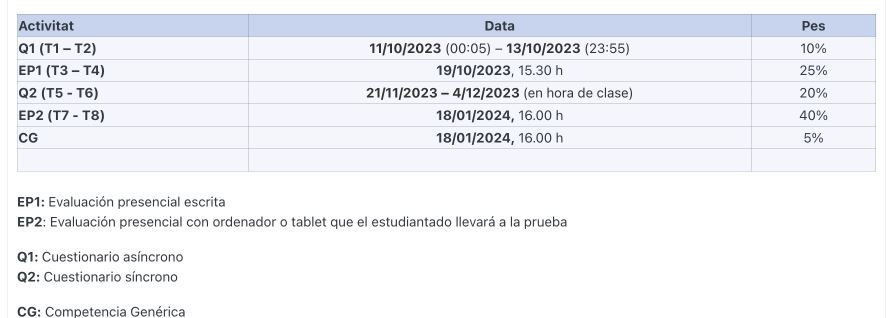

EEBE stats
2023-11-26
Chapter 1 Objective
This is the introduction course to the statistics of the EEBE (UPC).
Statistics is a language that allows you to face new problems, on which we have no solution, and where the randomness plays a crucial role.
In this course we will discuss the fundamental concepts of statistics.
3 hours of Theory per week: we will explain the concepts, we will exercise.
6 hours of Individual study per week: notes of course notes and resources in Athena.
2 hours of problem solving with R: face-to-face sessions (practices).
Exam dates and additional study material can be found in ATENEA metacurso:

Evaluation objectives:
Q1 (10%): Test in computer Duration 2h on the indicated dates.
- Basic command knowledge (practices)
- Ability to calculate descriptive statistics and graphics, in specific situations (theory/practice)
- Knowledge about linear regression (practices)
EP1 (25%): Written test (2-3 problems)
- Capacity to interpret statements in probability formulas (theory).
- Knowledge of the basic tools to solve problems of joint probability and conditional probability (theory).
- Mathematical knowledge of probability functions to calculate its basic properties (theory).
Q2 (10%): Test in computer Duration 2h on the indicated dates
- Capacity to identify probability models in concrete problems (theory/practice).
- Use of R functions to calculate probabilities of probabilistic models (practice/theory)
- Identification of a sampling statistic and its properties (theory/practice)
- Knowledge of how to calculate the probability of sampling statistics (theory/practice)
- Use of R commands to calculate probabilities and make random sampling simulations (practice)
EP2 (40%): Written test (2-3 problems)
- Mathematical capacity to determine specific estimators of probability models.
- Knowledge of the properties of specific estimators.
- Knowledge of confidence intervals and their properties (theory).
- Ability to identify the type of confidence interval in a specific problem (theory).
- Knowledge of hypothesis types to be used in a specific problems (theory). f.Use of R commands to solve confidence intervals and hypothesis tests (practice).
CG (5%): Written test (2 questions about a text)
- Written expression capacity on a subject related to statistics.
Coordinators:
- Luis Mujica (Luis.eduardo.mujica@upc.edu)
- Pablo Buenestado (Pablo.buenetado@upc.edu)